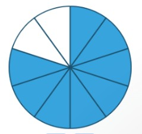
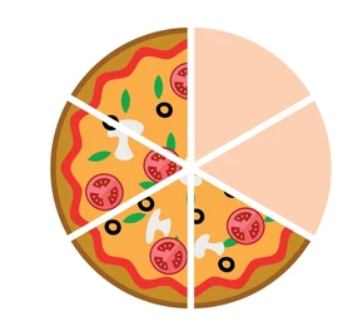
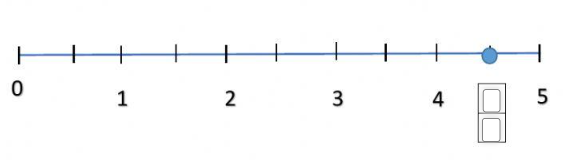
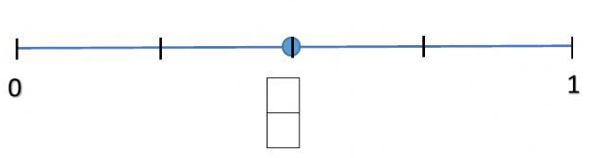

Cuestionario SCORM Pregunta 1) En matemática, se llama número racional a todo número que puede representarse como el cociente dedos números_____________ Respuestas Opción 1 Enteros Opción 2 Fraccionarios Opción 3 Mixtos Pregunta 2) El conjunto de los números racionales incluye: Respuestas Opción 1 Solamente números positivos. Opción 2 Únicamente fracciones con numerador menor al denominador. Opción 3 Enteros, fraccionarios y decimales periódicos. Pregunta 3) Un ejemplo de aplicación de los números racionales en la vida real es: Respuestas Opción 1 El número de jugadores en un equipo de fútbol. Opción 2 La medida de 1,5 litros de jugo. Opción 3 La marca de un celular. Pregunta 4) Un número racional se caracteriza porque: Respuestas Opción 1 No puede representarse en la recta numérica. Opción 2 Puede expresarse como cociente de dos enteros. Opción 3 Siempre es un decimal infinito no periódico. Pregunta 5) Un número racional se forma a partir de: Respuestas Opción 1 Dos raíces cuadradas. Opción 2 Dos números enteros, uno como numerador y otro como denominador. Opción 3 Dos números primos solamente. Pregunta 6) Selecciona la fracción que corresponde a la representación grafica dada  Respuestas Opción 1 8/10 Opción 2 10/8 Opción 3 7/10 Pregunta 7) Selecciona la fracción que corresponde a la representación grafica dada  Respuestas Opción 1 4/6 Opción 2 4/7 Opción 3 6/4 Pregunta 8) La siguiente representación en la recta numérica corresponde a el número racional______  Respuestas Opción 1 7/2 Opción 2 8/2 Opción 3 9/2 Pregunta 9) La siguiente representación en la recta numérica corresponde a el número racional______  Respuestas Opción 1 1/4 Opción 2 2/4 Opción 3 3/4 Pregunta 10) De los siguientes ejemplos selecciona uno que NO represente un número racional usado en la vida cotidiana. Respuestas Opción 1 Medir medio litro de agua. Opción 2 Si acertaste 18 de 20 preguntas de un examen. Opción 3 Medir un objeto circular. Habilitar JavaScript